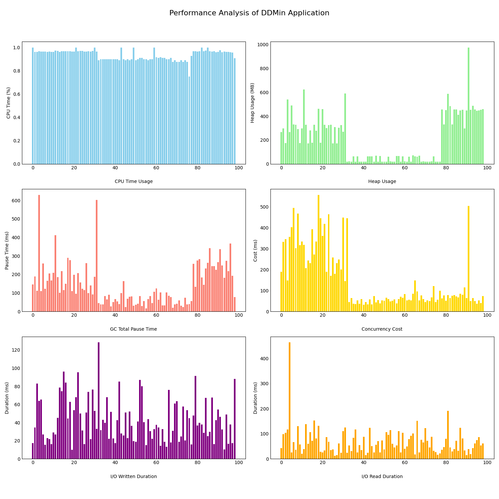

Performance Analysis Costs of DDmin Java Application
This report gives a detailed look at performance measurements from tests done on 100 UNSAT alloy models, using the DeltaDebugging Java application finding the minimal unsatisfable subset (MUS). The analysis of cost performance during the tests covers various aspects including CPU time usage, heap memory usage, garbage collection impact, concurrency costs, and I/O operations.
Graphs Overview
- CPU Time Usage (%): Shows the percentage of CPU time used by each model, helping to identify models that are more CPU-intensive.
- Heap Usage (MB): Displays the amount of heap memory used by each model in megabytes, indicating the memory footprint of the models.
- GC Total Pause Time (ms): Represents the total time in milliseconds that the application was paused for garbage collection, highlighting the impact of GC on application responsiveness.
- Concurrency Cost (ms): Illustrates the time spent in milliseconds waiting due to concurrency issues, such as lock contention, which can impact application performance.
- I/O Written Duration (ms) and I/O Read Duration (ms): Show the duration of I/O operations for writing and reading, respectively, in milliseconds, providing insight into the cost of I/O operations on performance.
Graphs
